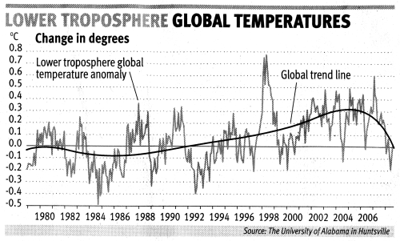

Polynomial curve fitting
Polynomial curve fitting (linear regression being the most prominent example) belongs to the class of overdetermined linear inverse problems which can be solved using the normal equation. In the exercises in class we investigate this adventurous fitting and the even more adventurous predictions of this fit:
{kind=link}
function [coefficients] = LstSqrFit1D(auxvar,data,order)
%This is a routine for least square fitting of polynomials with
%order n (i.e. n=1 is straight line)
%Auxvar is the auxilary variable (i.e. x-values)
%Data is the data variable (i.e. y-axis)
%Auxvar, Data must have same size.
%The function returns the coefficients of the polynomial.
%check if auxvar is column vector
[row, col] = size(auxvar);
if (row<col)
auxvar = auxvar';
data = data';
end
%setup G matrix
NumberOfDataPoints = length(auxvar);
G=zeros(NumberOfDataPoints,order+1);
for k = 1:order+1
G(:,k) = auxvar.^(order-k+1);
end
display(num2str(cond(G)))
%%Naive Lsq inversion (works for small orders)
%coefficients = inv(G'*G)*G'*data;
%Lsq inversion that can deal better with poor-conditioning
%(python equivalent is numpy.linalg.lstsq)
%coefficients = (G'*G)\(G'*data);
%Diagonal Loading can stabilize this system.
coefficients = (G'*G+0.0001*eye(order+1,order+1))\(G'*data);
end